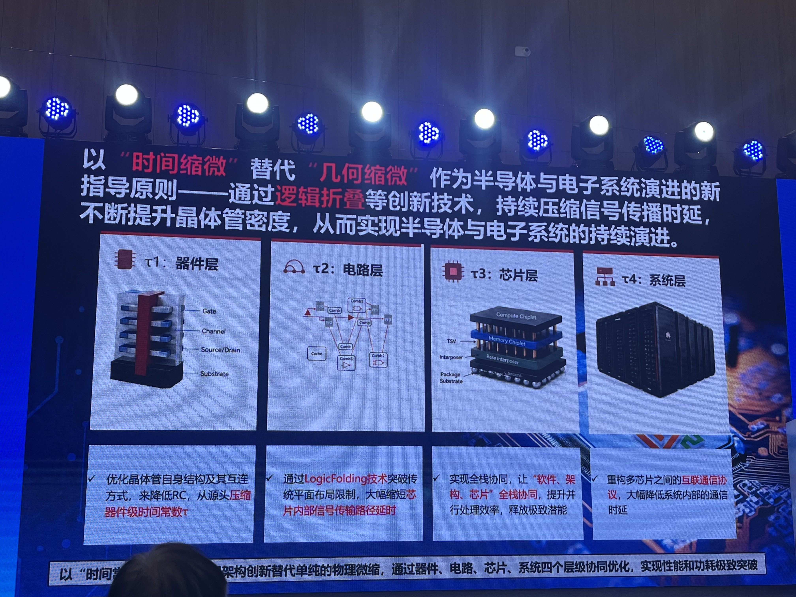
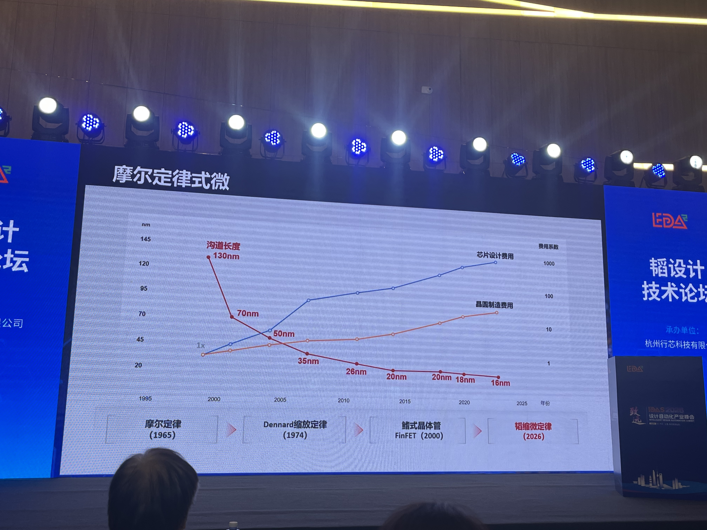
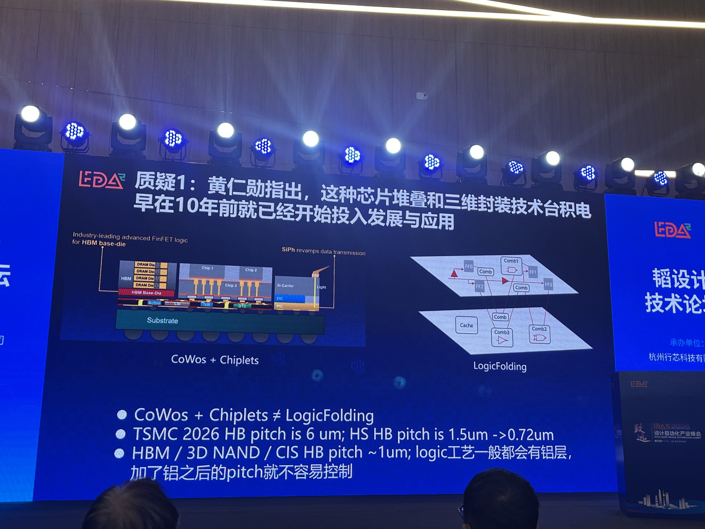
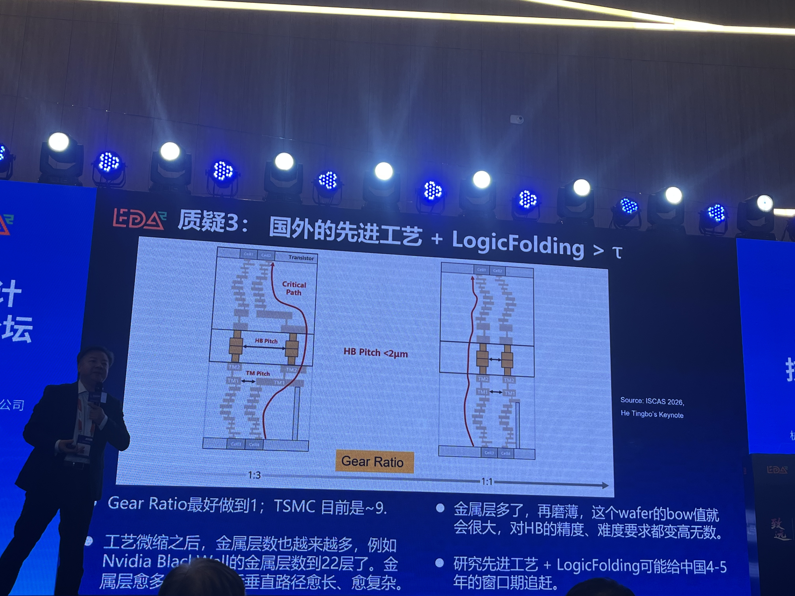
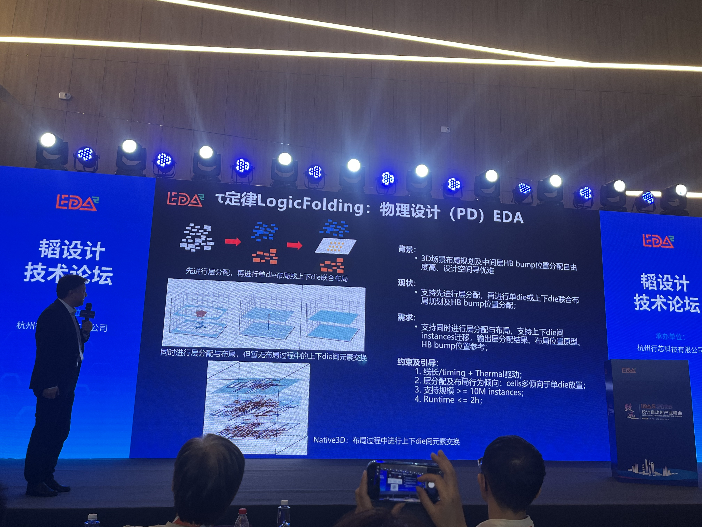
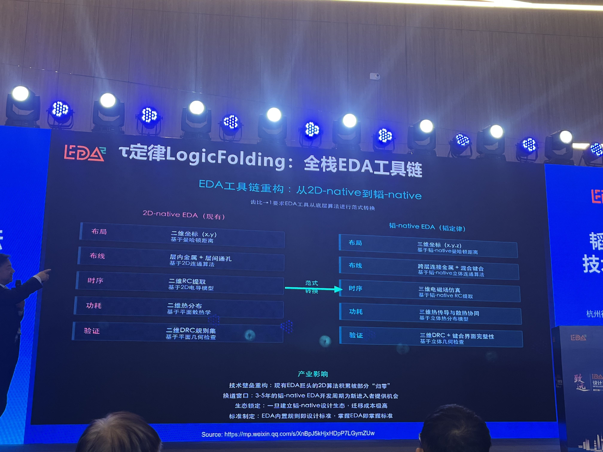
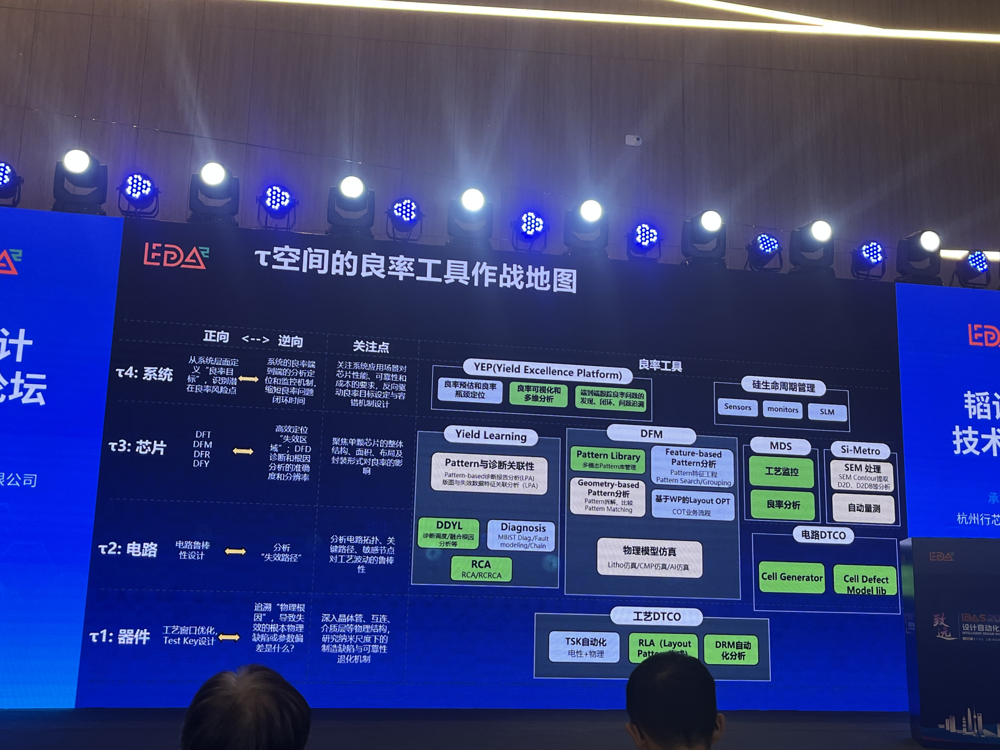
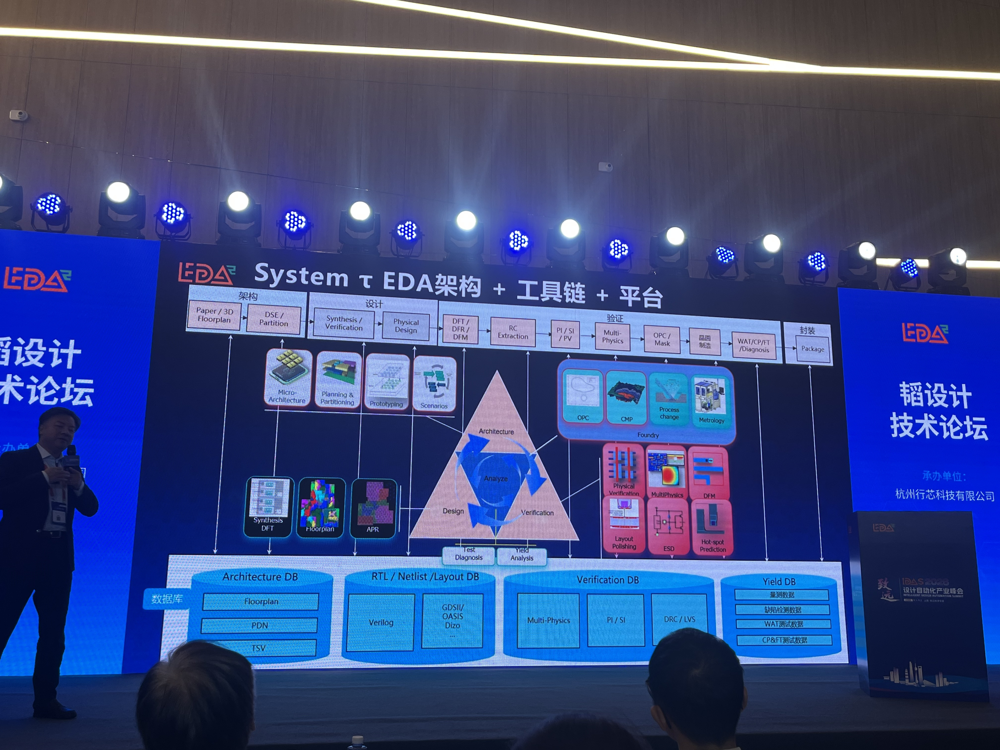

IDAS / τ SCALING / 3D EDA
从几何缩微到时间缩微τ 定律、LogicFolding 与 EDA 工具链重构

根据 2026 设计自动化产业峰会“韬设计技术论坛”现场演讲、录音转写和演示页整理。文中的路线图、数字和时间窗口均为现场观点，未作独立事实核验。
半导体行业过去几十年的主旋律，是沿着摩尔定律不断缩小晶体管尺寸。更小的晶体管带来更高的集成度、更快的速度和更低的单位晶体管成本。然而，当先进制程进入个位数纳米，曝光、制造和芯片设计费用快速上升，依靠几何缩微获得收益的难度也越来越大。
在这样的背景下，τ 定律试图把产业演进的核心尺度从“长度”转向“时间”：以时间缩微补充乃至部分替代几何缩微，通过器件、电路、芯片和系统四个层级的协同创新，持续降低信号传播、数据访问、互联和计算的延迟。
一、摩尔定律遇到的，不只是物理极限
摩尔定律式微通常被理解为晶体管尺寸逐渐逼近物理极限，但现场演讲强调，成本可能比物理极限更早成为决定性约束。随着工艺节点演进，芯片设计费用和晶圆制造费用都在上升。EUV 延续了几何缩微，但 High-NA EUV 的设备成本、工艺整合成本和量产节奏，使几何缩微越来越像少数头部企业才能参与的游戏。

因此，问题不再只是“晶体管还能做多小”，而是：在既有或相对成熟的工艺上，能否通过连接方式、空间组织和系统协同，让数据走得更短、等待更少、计算更快？
二、什么是 τ 定律
τ 是希腊字母 Tau，在电子学中常用来表示时间常数。一个最直观的例子是 RC 电路：
电阻 R 与电容 C 决定电路响应的快慢。对现代芯片而言，真正限制性能的“时间”远不止一个 RC 常数，还包括存储访问时间、逻辑门开关时间、片内与片间互联时延、I/O 延迟、系统通信时延，以及更长尺度上的可靠性与全生命周期指标。
τ 定律的核心可以概括为：以时间缩微替代单纯的几何缩微，通过器件、电路、芯片、系统四个层级协同优化，持续压缩电子系统中的关键时间常数，实现性能、功耗与密度的继续演进。
| 层级 | 优化对象 | 典型路径 |
|---|---|---|
| τ1：器件层 | 晶体管本征 RC 与互连方式 | 新器件结构、材料与工艺协同，从源头降低器件时间常数 |
| τ2：电路层 | 逻辑路径和片内互联时延 | LogicFolding，将细粒度逻辑拆分到不同晶圆层，缩短关键路径 |
| τ3：芯片层 | 芯粒、存储、互连与封装 | Chiplet、混合键合、3D 堆叠、背面供电及多物理场协同 |
| τ4：系统层 | 节点间通信和系统级效率 | 超节点、低时延互联、软硬件协同与全生命周期优化 |
这四层并非彼此独立。器件参数会影响电路时序，电路划分会改变芯片面积与缺陷分布，封装方式会影响系统通信和散热；反过来，系统目标也会向下约束芯片、互连、电路乃至工艺。τ 定律的关键不只是“把芯片叠起来”，而是建立一套跨层联合优化方法。
三、LogicFolding 不等于传统 3D 堆叠
LogicFolding 可译为“逻辑折叠”。它与 CoWoS、Chiplet 或传统 3D 封装的根本区别，在于切分粒度。
传统 2.5D/3D 集成通常以芯片或功能模块为单位：CPU、HBM、I/O Die 等分别完成设计，再通过中介层、硅通孔或封装互连组合起来。LogicFolding 则进一步打开一个逻辑模块，把标准单元、逻辑门乃至更细粒度的电路元素分配到不同晶圆层，通过高密度混合键合建立垂直连接。

- Chiplet 解决的是“几颗相对完整的芯片怎样组合”；
- LogicFolding 解决的是“同一段逻辑怎样跨层展开，并让关键连接改走垂直捷径”。
LogicFolding 的收益来自互联。如果把原本在二维平面上绕行的长连线改为短距离垂直连接，关键路径便可能显著缩短，同时提升有效逻辑密度。但三维堆叠并不会自动带来收益。
四、Gear Ratio：垂直互联能否兑现收益
演讲反复强调一个指标：Gear Ratio，即混合键合间距与芯片顶层金属连接间距之间的匹配关系。理想状态是 1:1；如果两侧间距不匹配，就需要额外扇出和绕线，垂直互联节省下来的距离可能被平面绕线重新吃掉。

这也解释了为什么“先进工艺 + LogicFolding”不是简单相加。制程越先进，金属层往往越多，局部互连间距越小，晶圆厚度、翘曲控制、键合精度和跨层对准的难度也随之上升。只有工艺、键合、布局布线和时序优化一起演进，理论收益才可能转化为真实芯片性能。
五、EDA 为什么会成为关键瓶颈
传统数字后端工具的世界观基本是二维的：标准单元拥有 (x,y) 坐标，布线在若干金属层之间切换，RC 提取、功耗分析、物理验证和时序收敛也围绕二维芯片展开。LogicFolding 引入了真正的 z 轴，问题却远不只是多一个坐标。
1. 设计空间急剧膨胀
设计者不仅要决定每个单元放在什么位置，还要决定它属于哪一层、哪些连接使用混合键合、键合点怎样分配，以及上下层能否在优化过程中交换单元。与此同时，还要兼顾线长、时序、功耗、热、应力、可制造性和良率。
现场以数千万级可用混合键合点为例指出：今天的工具甚至难以回答“使用多少键合点后收益开始饱和”这样看似基础的问题。组合空间之大，使依赖固定流程和局部优化的传统工具难以胜任。
2. 从 pseudo-3D 走向 native-3D
当前较容易实现的办法是先做层划分，再把每一层当作普通二维芯片分别完成布局布线。这种做法可以称为 pseudo-3D：工具看到了多个平面，却没有真正同时优化三维空间。
真正的 native-3D 需要在布局过程中联合优化 (x,y,z)，允许单元跨层迁移，并实时考虑混合键合位置。由于 x、y 接近连续变量，而层分配 z 通常是离散变量，优化模型会变成更难求解的混合问题。

3. 每个传统工具都要理解三维
- 布局：从二维坐标转向三维坐标，并处理跨层单元迁移；
- 布线：从层内金属与通孔转向跨晶圆金属和混合键合；
- RC 与时序：从二维寄生提取转向三维电磁场建模；
- 功耗与热：从平面热分布转向三维热传导、热点与散热路径协同；
- 验证：从单芯片 DRC/LVS 转向三维结构、键合界面与跨层连接完整性检查；
- DFT：面对数量巨大的垂直互连测试与失效定位；
- 可靠性与良率：把器件缺陷、芯片面积、封装参数和系统冗余放在同一模型中评估。

六、良率必须从制造结果变成设计变量
三维系统由多个晶圆层、键合界面和封装结构组成，任一环节的缺陷都可能影响最终产品。总良率不再等于某一颗芯片的良率，而是器件、电路、芯片和系统多层映射共同作用的结果。
现场给出了一种嵌套描述：器件良率由工艺参数和缺陷分布决定；电路良率由器件良率映射而来；芯片良率还受到面积和缺陷聚类的影响；系统良率则进一步取决于封装参数与冗余配置。
这意味着良率分析必须同时支持两个方向：正向从工艺、器件和版图预测芯片与系统良率；逆向从测试和失效数据反推问题来自哪一层、哪种结构或哪段工艺。

七、τ-native EDA 应当长什么样
第一，全栈协同。从架构探索、逻辑综合、DFT、物理设计，到 RC 提取、电源与信号完整性、多物理场仿真、光刻和制造分析、晶圆测试、封装，工具要围绕系统级 PPDC 共同收敛。
第二，统一数据平台。架构数据库、RTL/网表/版图数据库、验证数据库和良率数据库需要互通。没有一致的数据模型，跨层分析就只能停留在手工导入导出，无法形成高频迭代闭环。
第三，从流程拼接转向联合求解。先分层、再分别布局的串行流程，只能获得有限的三维收益。τ-native 工具必须让架构、层划分、布局、布线、热、时序、供电、测试和良率在更早阶段互相看见，并允许优化结果反向影响上游决策。

八、对国内 EDA 的意义
在成熟二维 EDA 赛道上，国际头部厂商已经积累数十年。完全沿既有路径追赶，需要跨越工艺模型、算法、数据和客户验证形成的综合壁垒。τ-native EDA 则带来一次技术范式切换：全球现有工具同样主要建立在二维假设上，面对细粒度逻辑折叠、原生三维布局、多物理场联合优化和系统级良率闭环，各方都需要重新探索。
机会尤其可能出现在多工艺 PDK 融合与三维寄生提取、LogicFolding 层划分与混合键合优化、三维多物理场仿真、跨晶圆 DFT、系统级良率分析，以及贯穿设计与制造的统一数据平台。
窗口不等于捷径。真实落地仍取决于工艺、设计、封装、测试、EDA 企业和整机系统之间能否建立深度协作，也取决于工具能否进入真实芯片项目，经受规模、精度、运行时间和量产数据的检验。
结语
τ 定律最有价值的地方，不在于创造一个新的口号，而在于重新定义芯片演进的优化目标。LogicFolding 是这一思路在电路层的重要实现，却也把 EDA 推入一个更庞大、更离散、更多物理场耦合的设计空间。
传统二维工具的小修小补很难完整解决这些问题，布局、布线、提取、验证、测试、良率和数据平台都要逐步转向 τ-native。这是一条尚处早期、充满工程不确定性的路径。也正因如此，它既是 EDA 面临的一次严峻挑战，也是国内产业从“补齐二维工具”走向“共同定义三维方法学”的重要机会。